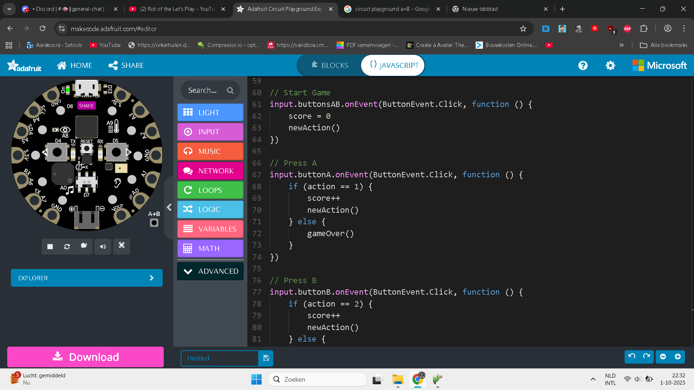
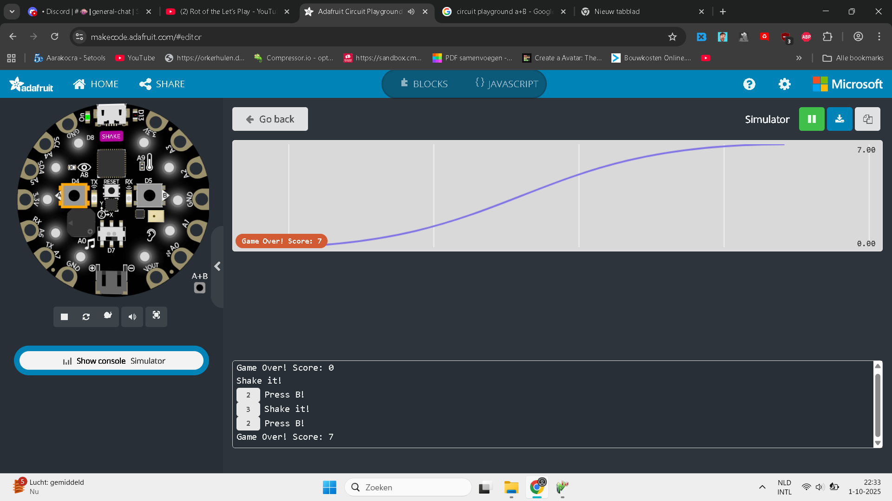

Voor deze opdracht maakte ik een game met mijn Circuit Playground met als doel om de speler uit te dagen om zo veel mogelijk acties achter elkaar te doen. Een Circuit Playground is een microcontroller met verschillende sensoren en knoppen en is normaal bedoeld voor mensen die willen leren programmeren. Ik heb het na mijn eerste jaar van mijn opleiding niet meer gebruikt, dus ik wilde kijken wat ik drie jaar later ermee kon doen.
Er zijn zeven verschillende acties, waarvan er vijf gebruik maken van sensoren. De acties zijn:
● Klik op A
● Klik op B
● Schudden
● Draai de Circuit Playground naar boven.
● Draai de Circuit Playground naar onder.
● Draai de Circuit Playground naar links.
● Draai de Circuit Playground naar rechts.
Eerst ging ik online programmeren met een virtueel Circuit Playground. Ik schreef code voor verschillende acties, zoals schudden of op een knop klikken. Door op A en B tegelijkertijd te klikken, begint de game. Anders maakt de Circuit Playground steeds geluiden als het iets te veel beweegt. Door een goede actie uit te voeren, krijg je een punt en kun je doorgaan met de volgende actie. Als je de verkeerde actie doet, dan is het spel voorbij.

Ik probeerde veel acties toe te voegen en om de acties willekeurig te maken, zodat elke nieuwe actie een verrassing wordt. Ik ging dat testen door in mijn console te kijken. De console laat zien welke actie nu afspeelt en hoeveel ik er achter elkaar correct heb.

Toen ik bijna klaar was, wilde ik nieuwe geluiden toevoegen waarin ik zeg welke actie nu gebeurt. Ik wilde Mu downloaden, zodat ik kon werken met CircuitPython, een programmeertaal met minder beperkingen. Helaas kwam ik erachter dat ik anders mijn hele code opnieuw moet gaan schrijven in een andere programmeertaal. Ik besloot om dat niet te doen, omdat ik niet genoeg tijd daarvoor zal hebben. Toen ik klaar was met programmeren, heb ik mijn code gedownload en geplaatst in mijn Circuit Playground.